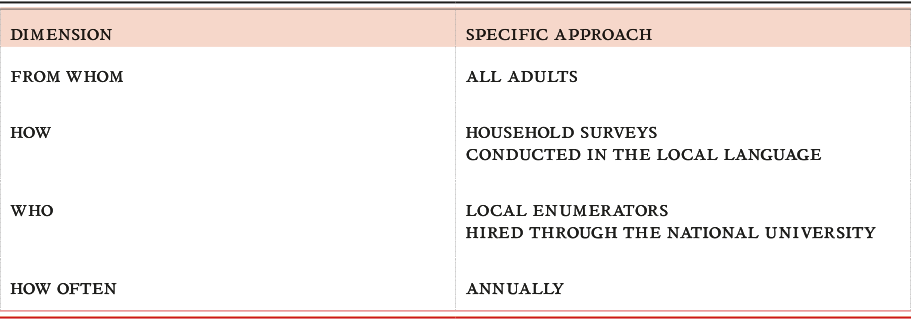
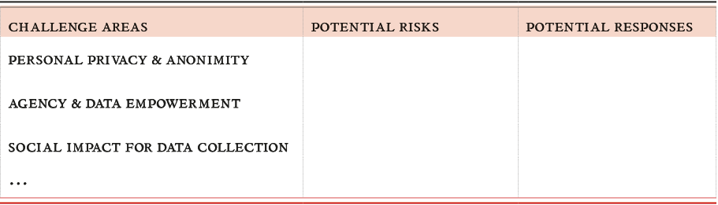
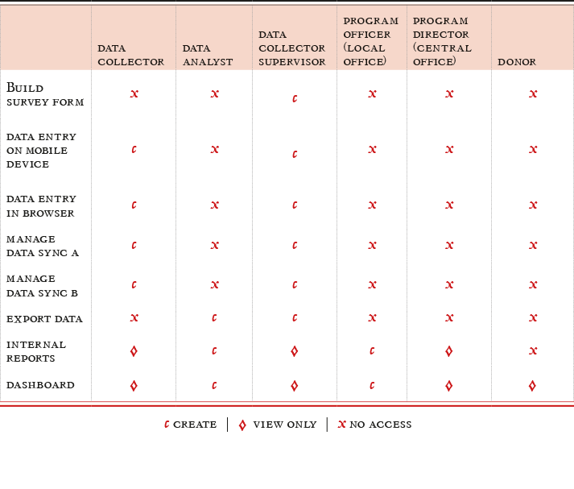

Getting Data
collecting data for your project


What’s your question?
Any evidence-based project relies on the complex, nuanced and deeply important process of collecting data. This chapter will address considerations around data collection: from defining your question, through to practical procedures for dealing with new and found data, to questions of agency, consent and privacy.
Determining the questions that you are trying to answer is the most important part of a data collection process. Data should always be gathered for a reason: namely, because you think the answer to your question lies within. You may be asking simple factual questions (eg. how many students graduate from a school annually), or questions that are divergent or evaluative (what impact did the change in curriculum have on students graduating from a school). No matter how simple or how complex, knowing the question that you are trying to answer is fundamental.
The next step is to determine where to find information that will most effectively help you answer your question. There are two main ways of getting hold of data:
Using existing data – data that has already been released and is publicly available, like a government census. This group also covers accessing non-released existing data (like through Freedom of Information requests), or taking data from existing sources that hasn’t been clearly packaged for research purposes, like scraping social media sources like Twitter and Facebook.
Collecting new data – gathering data directly from the subject (e.g. doing a survey of students and teachers in a school) or generating new data, potentially indirectly (e.g. logging GPS pings of staff cell phones while on specific missions).
No matter where data come from, try your best to ensure that it is good data. While there are many things to keep in mind about data quality, the most basic ones are accuracy, validity and timeliness. These are extremely important aspects of using data responsibly, but the technical sides to these, for example on data collection techniques and methodology, fall outside the scope of this book. Never fear though - there are many sources on this issue that can be referred to for help.
Further Resources
-
Data Quality: Do you trust your data? (an article by Hjusein Tjurkmen, Mariyana Hristova, Musala Soft)
-
See more at School of Data.
Collecting New Data
Designing a data collection process
Designing the data collection process requires asking basic questions about roles, tools and timing. This section needs to be informed by the risk assessment conducted during project design (see Don’t panic, plan.), but reviewed in detail here for your own project, to carefully consider responsible data challenges that might surface by the particulars of your data collection. To begin understanding what data collection methods will responsibly produce the data required by your project, review the following questions:
-
What are you collecting and why are you collecting it? How does this relate to your research question? Have this clear from the beginning of your design as it helps you throughout the process in making the right choices and changes.
-
Who provides the data? Did you get their consent for this specific use?
-
Who will collect the information? Ensure they are appropriate in relation to the specific identities of your participants (e.g. gender, race, class, language, etc.)
-
How will you collect the data? Establish a clear data collection process – will data collectors perform data entry in front of responders or after a conversation with responders? Consider the impact of the data collection method on the desired conversational outcomes between the data collector and respondents (e.g. conversations about sensitive topics shouldn’t be interrupted by the data collection tool; do what you can to remove external factors that might act as inhibitors for respondents).
-
How often will the data be collected? Will the same participants be polled repeatedly? How will frequency interact with other timeframes important to the community in question? What implications will this have for project resources and for data validity?
-
Take careful consideration of the tools you will use to perform data collection. In some cases, paper is a good option if using electronic devices will create suspicion or risk. But also consider that in some cases, electronic devices can be password protected and encrypted to protect the data in ways that paper cannot.
-
How will you transfer and store the data? Will the the data collected need to be centralised? In some cases, decentralised data is appropriate because the data is mainly operational and serves a short-lived purpose. If you plan to centralise the data, consider the data flow process from data collection to centralisation. What is the desired frequency of data centralisation? How secure is the data centralisation process, and what additional risks may arise from centralisation?
Defining challenge areas - an exercise
Step 1: Come up with a detailed data collection plan
The questions above can be used to define specific challenge areas for your project. You might want to create a table to map your steps, adding specific approaches and challenges that might arise for each. It would be best if done in a group, on a big sheet of paper. The table below shows examples of what specific approaches might involve.

Step 2: Brainstorm risks and responses
When you have identified some of the specifics, talk about some of the common responsible data challenge areas, such as identification and the social impact of data collection. Do any of these prompt concerns about the methods that you are planning to use to collect data? Write down any potential risks that occur to the team during discussion and note any potential responses that might help to manage those risks.

Deciding what data to collect
Data minimums and unanticipated use
When deciding what data to collect, consider the minimum amount of data necessary to reach the project goals in balance with the data you may want to collect for unanticipated uses. While many development programmes track clearly defined indicators, there may be an impulse to collect additional data outside of indicator tracking for operational or research purposes. It is important to refer back to your risk assessment to inform these decisions.
Red lines - what not to collect, and what never to collect
Be clear about the information you will not collect due to relevance, sensitivities, and risk. Think about unanticipated uses of the data and potential harm/risk.
In general, when thinking about what data to collect or not to collect, these are the most important aspects to consider:
Leave it out: Do you really need the names, ages and exact locations? The rationale for collection should be that it needs to be necessary to achieve your goals; not just that it would make things easier for you, or save you time. Often you can reconcile this by collecting less fine-grained data. Sometimes it means you will decide to refrain from collecting some data completely.
Metadata: This is data describing your data, for example the time a photo has been taken or the camera that was used. This metadata can reveal a lot of the information that you were deliberately not collecting, or that you want to protect. If this is the case, make purging of metadata part of the collection process from the very beginning, or configure the tools you are using to not create it in the first place.
Surveillance: While you are collecting data, you are not always alone, and when someone is passively or actively watching you, they can fill in the gaps. Depending on your risk assessment, this means you need to take appropriate measures to conceal your traces in the collection process, alter collection methods, or not collect the data at all.
Live Data Processes
Some projects will use “live data”, which is collected, accessed, reviewed, used and updated on a continual basis. Examples of such projects include service delivery projects, or projects that are case-based, in which several different team members have access to individual’s data and records. These systems can be especially challenging, as they compress the project data cycle, and force individual team members to adopt a variety of roles and responsibilities when relating to potentially sensitive data.
Roles and responsibilities
The first step is to clearly define who should have access to exactly what data at which point. For example, during the registration process, you may have intake staff (consider maybe these staff are volunteers or interns) who should be able to create new registration records but should not have access to detailed assessment information (which may contain sensitive information) about the subject. In this example, it could be that only case workers should have access to detailed assessment information on the subject. If referring a subject to another agency, that agency may receive a specific sub-set of information on the subject as to protect sensitive or non-relevant information.
TOOLS:
Create a Roles-Responsibilities-Functionality Map to help you identify who should do what and when. Here is an example:

Access to data throughout the micro-cycle
In addition to defining roles and permissions during the service delivery period, you should also define roles and responsibilities throughout the project lifecycle. Consider who will handle data (and who should not) during data collection, data management (storing, cleaning, analysing), and internal data sharing. Do you have data administrators who will oversee the data workflow and support data access and flow according to the plan you’ve defined?
Reference/storage/management
Inevitably, data will be stored on multiple platforms throughout the data lifecycle. Consider the various tools used for data collection (mobile device, web form, paper, etc.), data storage (mobile device, laptop, centralized database, paper, etc.), data cleaning/analysis (Excel spreadsheet, database, reporting platform, etc.) and ensure there is a safety and security plan for each of the various platforms used.
Common ways of collecting data
There are many methods of collecting data, and each one comes with its own challenges. When choosing the data collection tools and processes you will use, think about how it can affect your message and what type of influence it might have when interacting with the participants.
Web-based surveys: There are a number of popular survey platforms available. From a functional perspective, it is important that they do what you need them to do, while not blowing your budget. However, you also need to ensure that they provide your participants with reasonably secure access (for example at least an https connection), so they are not transmitting sensitive information over unencrypted channels.
Moreover, if you are using an external provider, ensure that ideally they have no access to the data themselves, and cannot be legally compelled to hand it over without notifying you and allowing you to challenge that order. Refer to the data management chapter on more legal and practical considerations when working with external providers.
Mobile phone surveys: Mobile phone surveys are a great way to reach many participants fast with relatively low cost and a relatively low access barrier.
However, you are critically relying on existing infrastructure that is outside your control - the mobile phone network. That means, you are relying on telecommunications companies to follow responsible procedures, as all information passes through them; not to forget the huge amount of metadata that they will undoubtedly be in possession of: for example, the location the SMS was sent from, to whom, and times. They may be legally compelled to hand out either the metadata, or the data itself, to government authorities.
Consequently, you need to assess whether the phone network operator can be trusted, when thinking about using mobile phone surveys.
In-person surveys using mobiles or tablets: these surveys follow the same dynamics as interviews - it may be necessary to establish a safe space for the participant and a situation of trust where they can give informed consent.
On the positive side, often you have more means of securing the data on devices, compared to working with paper. However, you need to ensure the devices are properly secured, in particular by encrypting their storage and establishing strong passwords. In addition to this, ensure there is a clear and secure way to process the data from the devices into the management system, and check who else has access to the data stored on these devices.
Quick checklist for tools, security and training
-
Consider the pros and cons of using open source tools for the project (cost, customisability, independent audit, support)
-
Do some features of the tools you have chosen present security challenges? If so, can they be managed or closed?
-
Will data collectors need to edit their data/information after the fact? If so, ensure the technology supports the desired level of data editing, and ideally, that it records any changes made.
-
Ensure selected tools allow for your desired range of data access permissions: will you need people with various levels of permissions to interact with specified sets of data? (see section: For your eyes only)
-
Establish a response plan for potential emergency technical challenges (phones breaking, no wifi, etc.) and have support ready to go.
-
Establish a response plan in case tools are confiscated or lost (eg. being able to wipe the data remotely)
-
Consider using strong encryption software with good end-to-end implementation to protect data and communications content. Consider built-in protection features within your selected technology (e.g. device encryption) and their potential vulnerabilities
-
Ensure staff have received appropriate training on the established informed consent process and are aware of ethical considerations around conducting research on other people
-
Ensure staff have received appropriate training on data security for secure data management with devices that they will be using– password best practices, anonymised data, device security, etc.
-
Have a process for reporting incidents, to provide care for your staff, as well as affected participants.
Note that this checklist is likely not to be exhaustive, but covers frequently observed blind spots.
Working with existing data
Even if your project is not the one that actually collects and creates new data, there are a number of important issues to consider in terms of dealing with data responsibly. Once you have identified appropriate data sets that will support your project activities, there are three primary areas of responsibility to consider:
-
How the data is evaluated for use
-
How it is managed
-
How it is presented
Evaluating Existing Data
Understanding the context
While working with existing data, it is important to remember that data was collected by someone else for specific purposes and to address certain needs, which probably don’t match yours. This can lead to biases and gaps: since the producers of this data already had an understanding of what they wanted and how they wanted it formatted and distributed, they may not have explicitly included information about the context in which it was produced. Unless you’re lucky, neither will they highlight steps in the data cycle that were problematic. It is important to try and gain some insight and understanding of the context of the data before using it, through considering the following questions. You might not be able to answer all of them to the extent that you would like, but taking the time to work out which ones are essentials, and talking through the others with your team, is important.
-
Is there enough contextual information documented by the originator of the data for you to be able to judge its usability? ie. do you know why it was collected, when, with whom, under which circumstances.
-
Who published/licensed the data? Are they the same actor that collected the data? How much control did they have over the data collection process?
-
Who funded the process? If the funder is known for pushing a particular agenda, bear this in mind when interpreting the data.
-
What biases might the data hold? It may be useful to think of gender, geographic area, ethnicity, age, income level, internet access, at risk populations, etc
-
What methods were used to collect the data? Where they appropriate? Are the limitations of those methods appropriately referenced in the way the data is presented?
-
Are there any social factors that should be taken into account when interpreting the data?
-
Is the data inclusive? Think of issues like gender, region, etc…
-
Was active engagement ensured for the data subjects in the project design and data collection process? Was there an informed consent process? Was the data validated by data subjects?
Managing Existing Data
Data should be usable as well as useful. Data will need to be machine readable for most types of analysis. Some datasets will not be in analysable formats, however, and would need to be transformed to be usable. This raises questions of intellectual property (am I allowed to modify the dataset?) More importantly, it introduces a transformative process (moving data from one format to another) that needs to be planned and executed carefully, so as not to lose information or inadvertently manipulate the data. Make sure to keep versions of the data, and clearly document your steps so that if you need to you can go back a step and see where you started from.
Some considerations for the licensing regimes and legal obligations governing existing data are:
-
Will re-use or re-publication of the data violate any copyrights or other rights holders?
-
How should these rights be considered in light of the responsible data challenges identified in the project risk assessment and in light of the project objectives?
-
Do the licenses or permissions on the data limit the formats in which the data can be manipulated and reproduced?
-
Does use of the data violate any terms of service?
Who is hidden in the data?
All data reflects on people. Even when it is de-identified, anonymized or aggregated so that individuals are not immediately apparent, the possibility to re-identify individuals is always there, especially when combining that data with complementary sources of information. This is a phenomenon called the Mosaic effect.
CASE STUDY: “I know what you watched last summer”
In 2006, the movie streaming company Netflix published 10 million movie rankings by 500,000 of its customers with the aim of developing a better way of ranking the movies that it recommends. The data was supposed to be anonymised by replacing customer names with random numbers and removing personally identifiable information. However, researchers cross-referenced the Netflix Data with the public information available on the Internet Movie Database website – where users publicly enter movie rankings under their own names. By comparing the two datasets for a small sample of users, it thus became possible to de-anonymise many of the people and understand their movie choices. Reference: “Why ‘Anonymous’ Data Sometimes Isn’t”
Even without identifying individuals, however, data about “things” or events can reflect the activities and habits of people and groups when combined with the right contextual knowledge. A dataset displaying water access points can, for example be used to infer information about population size, consumption habits and socio-economic status that could support discriminatory policies or exacerbate social tensions.
It’s worth spending some time trying to identify types of people reflected by data, even when they are not readily apparent. Some areas to think about could include:
-
What does this data say about individuals? Who could be left out?
-
How could this data be combined with other datasets to provide more information?
-
Could this data be used to reveal any sensitive information about people or groups?
This exercise could be organized as a brainstorming exercise with the project teams, to try and work out as much as possible about the people behind a found data set, and then to use those intuitions to consider relevant responsibilities when using that data.
Collecting anonymised metadata on mobility of groups of persons on the basis of mobile phones may seem rather innocuous and certainly has helped making humanitarian aid more efficient in times of crises. However, depending on the context, this kind of information can have damaging effects on data subjects. As researcher Linnet Taylor puts it in her study of data science challenge involving African mobile data: “(…) human mobility is becoming legible in new, more detailed ways (…) this carries with it the dual risk of rendering certain groups invisible and of misinterpreting what is visible. Thus this emerging ability to track movement in real time offers both the possibility of improved responses to conflict and forced migration, but also unprecedented power to surveil and control unwanted population movement.” Source: No Place to Hide: The Ethics and Analytics of Tracking Mobility
Presenting existing Data
When presenting existing data, it is critical to include information about the data’s provenance and the context in which it was produced. This includes all of the information uncovered when evaluating and managing the data, but it also implies being transparent about what is not known about the data. Being explicit about the data’s contextual unknowns is essential for enabling others to manage your project’s data responsibly.
An easy way of thinking through the contextual information that might need to be presented is via the questions listed above, underneath ‘Understanding the Context”. You might want to present the answers to some of these questions together with your analysis of the data.
Further Resources:
Organizations that may be able to help you further on issues you may encounter:
Power to the people
Sometimes, it is easy to get caught up in the technical aspects of collecting and managing data, and forget that we are working with information about human beings and their lives. It is crucial to be responsible, open, transparent and inclusive in the data collection process, creating clear mechanisms for engagement and feedback, and always keeping in mind who is being described and who, ultimately, should have the last word.
Representation
Data is a very powerful tool in telling a narrative about peoples’ lives and realities. We need to understand how these narratives may impact people’s lives, and be responsible in the ways we use and present this data. Given that it is important that data is used in the narrative responsibly, there are two aspects to consider:
Inclusion: Data can never represent all people and all nuances of a cultural or social mosaic; no matter how big the sample size used, it is vital to remember that data is inherently exclusive and rarely, if ever, tells the whole story. If we ignore the very possible exclusions in data we risk perpetuating social inequalities. When collecting or finding data, ask yourself: who does the data leave out? Who is not reflected in this data and what impact might that have on their lives when using that data for programming, advocacy or policy change?
Accuracy: Data needs to be as accurately reflective as possible of the reality of the people involved. Otherwise, the narrative that is developed from the data can be harmful for those people. The accuracy aspect is mainly about ensuring that the right questions are being asked: there are many elements of data accuracy that fall into the realm of research methods and techniques of data collection and so fall outside of the scope of this book. Bear in mind also that “accuracy” is inherently subjective.
Consent
The concept of consent is so central, it occupies a full chapter in this book, and we will only mention it briefly here. One of the first steps involved in getting data, is making sure that the people who are reflected in that data and who might be providing that data give permission for you to collect and use the data. This permission needs to be informed and given willingly, without feeling as though their other basic rights are at risk if they refuse consent. There are debates as to whether or not consent is always appropriate or achievable, and there are different levels of consent. Consent is a keystone to responsible data, and details on it are given in the relevant chapter.
Ownership
Who owns the actual data, and what does that mean for the people involved? Many detailed laws and regulations exist, governed by legal frameworks around ownership of data. There is a growing debate on how traditional regulatory frameworks apply to the new data ecosystems. As these bigger debates settle, there are a few ethical issues we should think about that are broader than legal ownership. Ultimately, data belongs to the individual that the data describes, as they have the right to withhold consent and to remove their data from the process.
However, there are a few problems with this: given the different types of data that exist, active data ownership is not always feasible. For instance, census data is often mandated by national law and an individual cannot opt out of being counted. Many forms of big data also have very complicated opt-out mechanisms, if they have any at all. This makes it very difficult for individuals to claim or retain effective ownership. Some basic questions to ask in this regard are:
Does the individual have control over how their data is used? Do they have power to stop the data from being used in a certain way? Are they aware of how the data will be used and is there a way to communicate changes in data use? How are we accountable to the people reflected in the data? How is this accountability enforced? There are also important issues to address regarding the power dynamics that emerge during the use of and collection of data. These are discussed in greater detail in the chapter The world of data)
Transparency
Transparency might seem to be the counterbalance to privacy and security; in reality the two concepts are perfectly compatible, and effectively two sides of the same coin, as long as they both work towards empowerment and protection of people. Transparency calls for disclosure: keeping an open and easily accessible account of methodology, intent of data use, who will use it and for how long, as well as how the data, the analyses and the learnings will be shared, and with whom. There should be a minimum list of data areas that can be safely disclosed. Specific instances in which this could prove to be important are donor reporting, monitoring and evaluating programs. Privacy should be granted to those without power: transparency should be demanded of those with power.
Information is power and as is commonly repeated, with great power comes great responsibility. It is important to think of transparency in terms of how the data is being released, and whether all necessary steps to protect individuals have been taken into account. Is data anonymised and assessed for identification risks, or is the information for advocacy work where these identities need to be disclosed? What is the most responsible way to navigate this scenario? Ultimately, the responsibility of making this choice lies with you.
Consent
Informed consent is the mechanism through which people agree to provide information for research or data collection projects. Generally, consent has been understood as something that is given by individuals during direct interaction with researchers or surveyors, and is composed of three components:
-
disclosure of research objectives and any risks or negative consequences of participating
-
capacity of individuals to understand the implications of participating
-
voluntariness of their participation
Fully informed consent includes full disclosure of all potential risks and negative consequences of participation, and might not always be feasible or even possible. In some instances, it might be difficult for project staff to anticipate the way in which changing political or cultural contexts will influence risks for data subjects, and emergencies or pressing needs may in some cases justify data collection without the consent of data subjects. As a rule, however, projects which include data collection directly from data subjects should seek informed consent to the degree that is possible, especially in high risk contexts. Projects collecting data indirectly (through already existing data, or data scraping) will struggle to obtain informed consent of data subjects, but should consider these issues, and whether some form of mediated or simple consent is appropriate or possible.
Consent can be a highly technical and context-specific matter with many legal and regulatory implications. For example, consent in the context of academic research may be different from that in a healthcare context. Also take note that consent has a particular meaning in a legal context, which can vary across jurisdictions and across sectors (for a discussion of legal jurisdictions and obligations, see the chapter in Managing Data).
This section is a high-level primer on how to think about consent when your project involves the collection, use and sharing of data. In that sense, it has a specific focus: it is not about consent to participate in the overall project to register for welfare benefits or receive medical attention, for example. It is about consent in relation to the use of the data that is provided as part of the overall development project.
A few words of caution:
-
This section provides guidelines to help you think through the most common aspects of consent. It is not a substitute for specific legal advice. In order to comply with the legal regime applicable to a particular country, sector, type of data or category of person, you should talk to your legal or compliance team or specialist advisors.
-
This section proceeds on the assumption that you have already thought through whether or not certain types of data should be collected at all, and have satisfied yourself that you are able to safeguard what you do choose to collect. This section focuses on mechanisms to receive consent once you have already worked out whether, when and how to collect data.
Elements of Consent
Explaining further the essential elements of consent as mentioned above:
-
Notice or Disclosure: the consent process has to ensure that the participant must be informed of the nature and purpose of the research, the procedures to be used, the expected benefits (if any), reasonably foreseeable risks, possibilities of not participating and procedures for confidentiality and anonymity.
-
Capacity, or Understanding: the information must be easily understood in that specific context (language, technical jargon) of the participant and they must be given the opportunity to have any of their questions answered.
-
Voluntariness: the consent to participate must be voluntary, free of any coercion or inflated promise, and not involve people who have power over the participants. In the development context, it is difficult - if not impossible - to remove any power dynamics entirely, however.
Additionally responsible data implies that we also include the following vital elements of consent:
-
Competence: The participant must be competent to give consent and not incapacitated due to mental status, disease, or emergency.
-
Form of Consent: In every consent process, the participant must signal agreement to participation, preferably in writing. In many cases written consent may not be appropriate and oral or implicit consent may do.
-
Waiver of rights: Consent should not compel the participant to waive any legal rights or releases from liability for negligence.
What to disclose to participants/the data subject
Consent has traditionally been regulated as part of the ethical review mechanism for academic research, and there is no authoritative description of consent practices for civil society or development project data collection. Fully informed consent likely requires that projects disclose the following information to data subjects:
-
The nature and objectives of the project. This may include project history, partners and funders, as well as the specific objectives of the project and how those might change over time.
-
The purpose for which the data is being collected. How narrow or specific this needs to be might be dictated by the applicable legal regime, but in general, consent should be linked to a clearly identifiable purpose rather than a vague, “omnibus”, open-ended one, however desirable the latter might be.
-
How the data will be used This includes how the data will be used internally and publicly, and should also include how the data will and will not be shared, and any limits to use or the time for which data be stored.
-
What risks the data and its use might pose. This depends on the outcomes of the risk assessment and can never be exhaustive or authoritative. Disclosure will need to strike a balance between providing data subjects with the information they need to make a reasonably informed decision about consent, and overloading data subjects with information that will have a negative effect on their engagement, and may itself present risks. For example, interviewees of the Belfast Project in the early 2000s were irresponsibly promised that the information they shared would not be accessible until after their death. They were not appropriately informed of the risk that this information could be accessed through legal channels. More information: Where Next After The Belfast Project
-
What opportunities data subjects will have to review and influence the data and its use over time, including opportunities to revoke consent.
How to disclose information to the participant/data subject
In order for people to be meaningfully informed, disclosure needs to be communicated in a way that is culturally, technically and socially appropriate. It also needs to be conscious of political and media landscapes and the fact that project contexts change over time. This has implications for the types of information that disclosure includes, as well as the mechanisms for communication disclosure and whether this takes place in-person, or through other types of media. Try to think about the following questions to help guide yourself through these issues:
-
Are the methods of disclosure appropriate for the subjects in terms of language, media, and social contexts? Have you thought about accessible methods of disclosure (media/literacy/etc.)?
-
Are there mechanisms built in to understand how project contexts change, and what implications that has for consent?
-
Will you need to disclose information more than once or on an ongoing basis?
-
Are people seeking the consent adequately trained to do so? For example, can the staff manage issues of consent and power within interpersonal relationships, and can they answer common questions that participants might have?
-
When the processes of providing consent or disclosing information are mediated by technology, it is important to note the ways in which specific platforms and media influence the experiences of individuals. Has this been factored in?
-
If applicable, how can the quality and consent received reflect on participatory projects? What does resistance to granting consent say about project relationships with communities and data participants? Do consent receipts suggest anything about degrees of engagement or the participatory nature of a project?
-
If you are not including a consent process in your project, explain why? Does this put subjects at risk?
-
Participants may change their mind about consent at various times, due to changing context or circumstances, and there always needs to be a way to individually revoke their consent. Have you provided for this, and have you made it easy and accessible so that the method of revocation does not in itself prove a barrier to exit?
Consent in a Digital World
Consent is fairly well understood in a traditional context. In a digital world that seems to offer infinite potential for information to be shared, adapted, manipulated and re-used, there is a need to recalibrate our view on the ‘traditional’ concept of consent. It is necessary to include and think about principled and practical challenges for anyone using digital and mobile tools to collect, manage and share data for social impact. Equally, if data is collected offline, or if there is a combination of online and offline data, there may be issues around merging data, and human data entry errors that may get replicated when copied onto digital formats, as well as other technical or practical concerns.
One of the most challenging areas in which to understand the necessity and the limits of informed consent is in regard to crowdsourced or user-generated data.
Consent for Crowd Sourcing:
-
Map potential risk areas for individuals/users in new and emerging crowd-sourced data technologies, information from which is used for advocacy
-
Identify, share and develop resources for mitigating these risks between organisations or initiatives that use crowdsourcing.
-
Develop Best Practices guidance for organisations using crowdsourcing technology for human rights research and campaigning.
Developing a consent policy
To ensure that your project has an appropriate and realistic approach to consent, it is worth spending some time developing a general consent policy for your organisation or for a particular project. This will help with understanding the mechanisms of consent which are appropriate, and ensure that they are appropriately implemented. A consent policy should address the following components:
Risk Assessment:
The level of consent and protection built-in will depend on the risk assessment, including an assessment of urgency and data sensitivity. This may include some sort of threat modelling, or broader sense of assessing risks that may flow from wrongful or erroneous use or sharing of the data.
Disclosure:
On the basis of the risk assessment, determine how much information you need to disclose to participants or data subjects. Generally this should include any potential risks or negative consequences that may follow from data collection and data use. It should also include detailed information about how data will be used, including time and use limits, future disclosure and accountability, and sharing, as described below. Generally, there may be a tension between thorough disclosure and the willingness or ease for individuals to participate in data collection processes. This balance will need to be struck through a thoughtful conversation among project team members, ideally with the input of stakeholders and data subjects.
Time and Use Limits: Setting limits for uses and for how long consent is valid will need to be balanced by limits broad enough to allow for unanticipated activities and limited resources; these need to be checked against potential risk. In particular, you may need to build in triggers or system alerts for when data gathered for one purpose is likely to be used for another purpose, bearing in mind that you might need to go back to the original consent giver to renew or refresh the consent.
Transparency and Accountability: This is about how data will be used and how you will ensure accountability for that use. How will information on actual use be shared over time. Will information be shared on specific instances of data use or data sharing? How often will this be updated? Will this information be posted on media that is accessible and appropriate for people reflected in the data? Depending on jurisdiction it may be important to carry out a legal assessment of applicable data protection regimes, administrative regimes or other restrictive legislation.
Sharing: How do people who are using the data check whether the use is in-line with what they consented to? When gathering data, there is often an assumption that action will be taken upon that data; from the perspective of the participant, otherwise, why collect it? Other people may make use of this data, either with the organisation’s consent or without, but it might not always be shared back with the participant. If people reflected in the data feel as though such uses are inappropriate or put them at risk, do they have mechanisms through which to raise these concerns?
Implementing and maintaining a consent policy
The political and social contexts in which projects collect and maintain data rarely remain static. Regularly reviewing and implementing a consent policy over time is an important measure to ensure that it remains appropriate. It is also an excellent way to maintain engagement and input from data subjects, to forecast problems with data validity or support for data collection projects.
Is Consent Broken?
A final word of caution: research increasingly finding indicates that consent has its limitations. For example, behavioural economics shows how easy it is to “nudge” people towards giving consent or choosing the riskier of options when faced when opt-ins or opt-outs.
Legal scholars such as Daniel Solove have talked of the limits of leaving users to regulate their own privacy and manage consents (in his words, privacy self-management). In his article, Privacy Self-Management and the Consent Dilemma, he describes how consent is flawed for many reasons: due to bounded rationality, people cannot possibly understand what they are consenting to and what possible uses their data might be put to in the future; they are often not given an opportunity to withdraw once consent is obtained upfront; they cannot comprehend the multiplicity of actors with whom their data may be shared; they lack visibility of who those data handlers are, which means that they cannot approach them to request that their data is deleted or not shared further.
Further, the impact of aggregation - when small pieces of data about them are combined with each other to form a more complete picture - cannot be appreciated upfront at the point of consent, and the societal benefits that accrue from safeguarding privacy and anonymity should be not be waived through consent. In Solove’s words,
“Privacy self-management takes refuge in consent. It attempts to be neutral about substance — whether certain forms of collecting, using, or disclosing personal data are good or bad — and instead focuses on whether people consent to various privacy practices. Consent legitimizes nearly any form of collection, use, or disclosure of personal data. Although privacy self-management is certainly a laudable and necessary component of any regulatory regime, I contend that it is being tasked with doing work beyond its capabilities. Privacy self- management does not provide people with meaningful control over their data.”
This does not suggest that consent is not meaningful. It is, and should be sought by projects collecting or generating data on people or groups, especially in contexts of power imbalance. More often than not, consent may be the most responsible way to implement a project with the knowledge and buy-in of the intended participants or beneficiaries. Projects should be wary, however, of relying wholly on consent to legitimize any sort of practice or wide use of data without regard for the people behind it.
Further resources
-
A checklist for evaluating policies on consent is available here.
-
Solove, Daniel J., Privacy Self-Management and the Consent Dilemma (November 4, 2012). 126 Harvard Law Review 1880 (2013); GWU Legal Studies Research Paper No. 2012-141; GWU Law School Public Law Research Paper No. 2012-141. Available at SSRN.